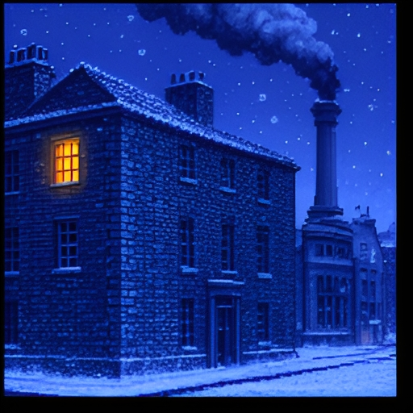
Marley's Chain
Scrooge's counting-house sells answers now. A brass thinking engine works them out, and the engine burns coal.
She wants to build a bigger one, and the papers need your signature by Christmas morning. Is the engine worth its smoke?
Use → (or Next) to advance and reveal points. F = fullscreen.
Welcome to Marley's Chain. Scrooge's counting-house sells answers now. A brass thinking engine works them out, and the engine burns coal. She wants to build a bigger one, and the papers need your signature by Christmas morning. Is the engine worth its smoke? Whenever it's your turn, I'll stop and wait for you.
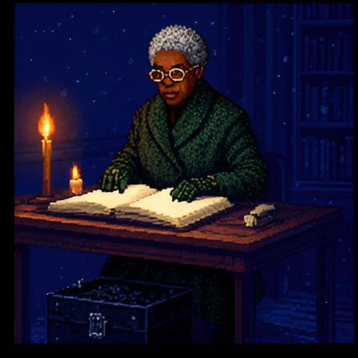
If You Haven't Read the Story
Here's the story in brief. Dickens's Scrooge is a man. In this telling Scrooge is a woman, and so is her clerk.
- In Charles Dickens's A Christmas Carol (1843), Scrooge is a London money-lender who cares only for the account books.
- Scrooge's partner, Jacob Marley, died seven years ago. On Christmas Eve his ghost comes back, dragging a long chain.
- Three Spirits follow: Christmas Past, Christmas Present, and Christmas Yet to Come. Each shows Scrooge something hard to look at.
- By morning, Scrooge has to decide what to do differently.
Dickens's Scrooge is a man. In this telling Scrooge is a woman, and so is her clerk.
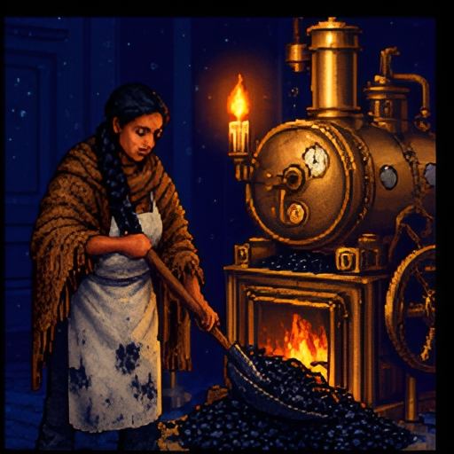
What Has Changed
Here's what has changed in this telling. The engine stands for today's AI, and its coal smoke stands for the carbon dioxide from the electricity AI uses.
- In this telling, the firm sells answers. Customers hand in questions, and a brass thinking engine in the back room works them out.
- The engine burns coal. Mrs. Cratchit, the clerk, stokes it all day while her son Tim waits by the door.
- Scrooge wants a second, larger engine hall. Her niece Freddie wants it too, because the engine can forecast floods on the river.
- You are the new junior partner. The building papers need your signature by Christmas morning.
The engine stands for today's AI. Its coal smoke stands for the carbon dioxide from the electricity AI uses.
Where You Stand Now
Rate each statement. There are no right answers, and you'll rate them again at the end.
One person's use of AI is too small to matter to the climate.
A more efficient technology will end up using less energy.
AI used for entertainment deserves less of the carbon budget than AI used for medicine.
It is fair to pollute more now to build tools that may help people later.
Those who profit from AI should pay its climate costs, even if they broke no rule.
Here's where you stand now. Rate each of these five statements by how much you agree. There are no right answers, and you'll rate them again at the end. When you've rated all five, press Submit.
Saved. You'll come back to these at the end.
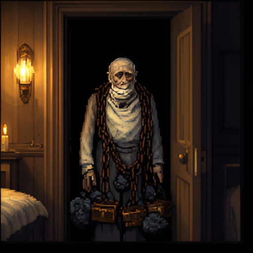
Marley's Chain
Here's Marley's chain.
- “I wear the chain I forged in life,” the Ghost tells Scrooge. “I made it link by link, and yard by yard.”
- Carbon dioxide adds up the same way. Much of the carbon dioxide a fire sends up stays in the air for centuries.
- The warming depends on the total added so far. So every fire, large or small, adds a link.
- Four visitors are coming tonight, each with one question. Marley's is first: what belongs in the ledger?
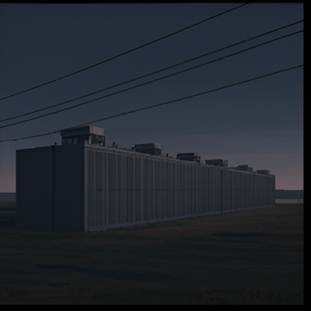
How Big Is It?
How big is it? These figures are from our world, as of November twenty twenty-six.
Ledger page · Our world, November 2026
- In 2025 the world's data centers used about 485 terawatt-hours of electricity. That is about 1.5% of all the electricity the world used.
- Their use grew 17% in that one year. AI is only part of it, but the data centers built for AI grew much faster, by about 50%.
- The International Energy Agency projects that data centers will use about twice as much by 2030, or about 3% of the world's electricity.
- So the share is small, and it is growing fast. Both are true, and each side of the public argument tends to quote only one.
Source: International Energy Agency, Key Questions on Energy and AI (2026).
AI affects the climate in three ways, and the power bill is only the first.
Three Kinds of Effect
The researcher Lynn Kaack and her colleagues sort AI's effects on the climate into three kinds. Here they are in the story's words.
The researcher Lynn Kaack and her colleagues sort AI's effects on the climate into three kinds. Here they are in the story's words.
- Building and running the engine: the coal it burns as it works, and the coal burned to build it.
- What the answers are used for: the direct result of what one answer is used for. One answer helps a baker burn less fuel, and another helps a prospector find more coal.
- How the town changes: slower, wider shifts in how people live and work once answers are cheap and everywhere.
- The first kind is the easiest to measure. The other two can cut emissions or add to them. The easiest effects to measure are not always the largest.
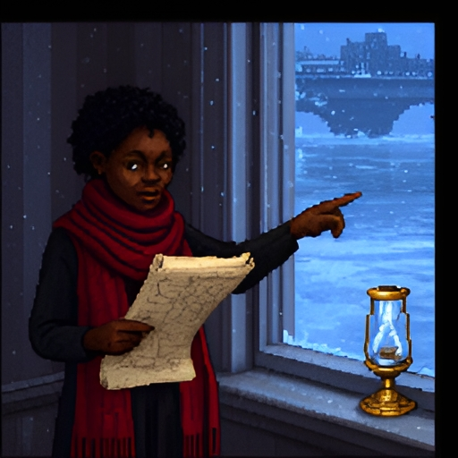
Two Branches
Here are the two branches.
- The ethicist Aimee van Wynsberghe says that “sustainable AI” has two branches.
- AI for sustainability asks how AI can help the environment. Freddie's flood forecasts belong here.
- The sustainability of AI asks what building and running AI costs the environment. Scrooge's coal-box belongs here.
- The two can come apart. An engine can forecast floods well and still burn a great deal of coal, so a full ledger needs both.
One Engine, Two Honest Totals
One engine can have two honest totals.
- Emissions from running a machine are called operational. Emissions from building it are called embodied.
- Scrooge's engine burns the town's coal. She also pays a windmill owner in another county for clean power.
- A location-based total counts the coal burned where the engine runs. A market-based total counts the clean power she paid for instead.
- Both methods are accepted. So ask “counted how?”, and ask whether her payment added clean power that would not otherwise exist. That is called additionality.
Which Kind of Effect?
Building and running the engine
What the answers are used for
How the town changes
The engine burns a bucket of coal working through one long calculation.
A foundry burns coal to smelt the iron for the engine's new boiler.
A baker buys an answer about her oven's draft and burns less fuel from then on.
A prospector buys answers about rock layers and finds a new coal seam.
Once answers are cheap and quick, shops all over town take to staying open and lit through the night.
Over ten years of cheap answers, the town spreads out. Families settle farther from the center and travel more.
Which kind of effect? Each line describes one effect of the thinking engine. Sort each one under building and running the engine, what the answers are used for, or how the town changes. When every line is placed, press Check answers.
Right. Coal burned while the engine works and coal burned to build it both count as building and running the engine. A baker's smaller fuel bill and a prospector's new coal seam come from what the answers were used for, while shops lit all night are a change in how the whole town lives.
What Does One Prompt Cost?
What does one prompt cost? These figures are from our world, as of November twenty twenty-six.
Ledger page · Our world, November 2026
- In 2025 Google measured a typical text prompt to its Gemini app at 0.24 watt-hours. That would light a 10-watt LED bulb for about a minute and a half.
- The figure counts the chips that do the work, idle machines kept ready, and overhead such as cooling. It leaves out training the model.
- It describes a typical text prompt. A 2026 study estimates that a long reasoning answer uses over ten times as much as a short one. Video can use hundreds of times as much.
- It is not a total. A total is the energy per prompt times the number of prompts, and the figure does not give that number.
Sources: Elsworth and colleagues at Google (2025), Oviedo and colleagues in Joule (2026), and the IEA (2026).
Reading a Per-Prompt Figure
It includes energy used by idle machines that are kept ready.
A long reasoning answer would be expected to use more energy than this figure.
To turn it into a total, you would also need the number of prompts.
It includes the energy used to train the model.
It applies equally to a text prompt and to a request for a video.
It tells you how much energy the company's AI used over the year.
Reading a per-prompt figure. A company publishes the energy used by one typical text prompt, counted the way the figure on the ledger page was. Check every statement that is true of that figure, then press Check answers.
Right. The figure counts running the prompt, including idle machines and cooling, and it leaves out training. It describes a typical text prompt, and it gives no total until you multiply by the number of prompts.
Using coal more thriftily can lead a country to burn more of it.
It is wholly a confusion of ideas to suppose that the economical use of fuel is equivalent to a diminished consumption. The very contrary is the truth.
Christmas Past: 1865
Christmas Past takes us back to eighteen sixty-five.
- The Spirit of Christmas Past sets you down in 1865. The economist William Stanley Jevons has just published The Coal Question.
- James Watt's steam engine did the same work on far less coal than the engines before it.
- Jevons pointed out that Britain then burned more coal, not less. Cheaper steam power was worth using for many more jobs.
- This is now called the Jevons paradox. It describes something that can happen. It is not a law that efficiency always fails.
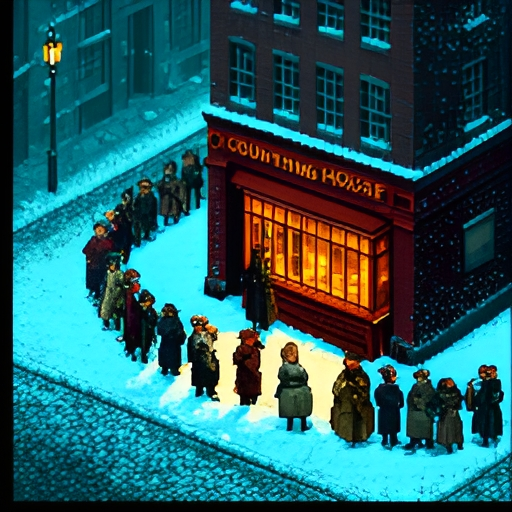
Three Outcomes
The old engine gives 100 answers a day at 4 scoops each: 400 scoops. A new engine needs 2 scoops an answer. It promises the total the town would burn if it bought no more answers: 200.
The old engine gives a hundred answers a day at four scoops each: four hundred scoops. A new engine needs two scoops an answer. It promises the total the town would burn if it bought no more answers: two hundred.
- Full saving. The town still buys 100 answers. 100 × 2 = 200 scoops. The total falls as much as promised.
- Rebound. Answers are cheaper, so the town buys 150. 150 × 2 = 300 scoops. The total falls, but less than promised.
- Backfire. The town buys 300. 300 × 2 = 600 scoops. The total rises.
- Economists find that some rebound is common. Reviews of the evidence find much less support for backfire as the usual result.
Try It: The Engine Room
This is the Engine Room, a small model with two controls. Thrift is how much coal the new engine burns per answer. Appetite is how many answers the town buys once answers are cheaper. The numbers are invented. Try a setting, then read what happens to the coal. When you've tried a few settings, press Continue.
Cheaper Answers, Rising Totals
Ledger page · Our world, November 2026
The Engine Room shows one sum: total coal is the coal per answer times the number of answers. A thriftier engine lowers the first and can raise the second.
The Engine Room shows one sum: total coal is the coal per answer times the number of answers. A thriftier engine lowers the first and can raise the second.
- The research group Epoch AI found in 2025 that the price of AI answers of a fixed quality was falling 9 to 900 times a year, depending on the task.
- Meanwhile, the electricity used by data centers kept rising: 17% in 2025 alone.
- In January 2025 Microsoft's chief executive, Satya Nadella, posted that the Jevons paradox was striking again. He predicted that use of AI would soar.
- All of this fits rebound. It does not prove that cheaper AI caused the growth, since new uses and new investment arrived in the same years.
Full Saving, Rebound, or Backfire?
Full saving: the total falls as much as promised
Rebound: the total falls, but less than promised
Backfire: the total rises
Coal per answer halves. The town buys the same number of answers. The total falls to 200 scoops.
Coal per answer falls by a quarter. The town buys the same number of answers. The total falls to 300 scoops.
Coal per answer halves. The town buys half again as many answers. The total falls to 300 scoops.
Coal per answer falls by a quarter. The town buys a quarter more answers. The total falls to 375 scoops.
Coal per answer halves. The town buys three times as many answers. The total comes to 600 scoops.
Coal per answer falls by a quarter. The town buys twice as many answers. The total comes to 600 scoops.
Full saving, rebound, or backfire? In each case a new engine burns less coal per answer, and the town burned four hundred scoops a day before. Sort each case under full saving, rebound, or backfire, then press Check answers.
Right. When the town buys no more answers, the whole promised saving arrives. When it buys more but the total still falls, that's rebound, and when the total rises above four hundred scoops, the thriftier engine has backfired.
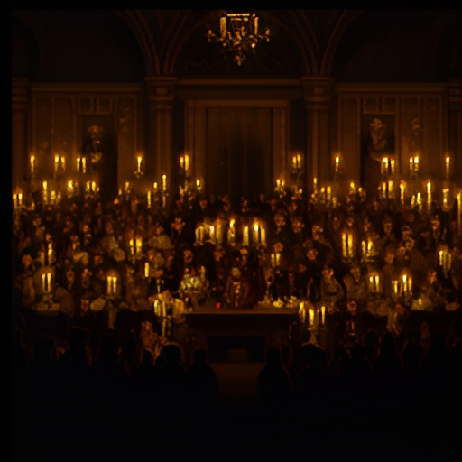
Decision Point: The Thriftier Engine
Nothing. A thriftier engine is progress.
A cap on her total coal, however many answers she sells.
A price on every scoop, paid to the town.
Refuse the new engine altogether.
A decision point: the thriftier engine. Scrooge can buy an engine that halves the coal per answer. She expects to sell three times as many answers. What should the town ask of her? This one isn't graded. Pick the answer closest to your view, and read its note.
Half the coal per answer and three times the answers is one and a half times the coal. So efficiency is not a climate policy by itself. A cap on the total coal, or a price on each scoop, is what turns it into one.
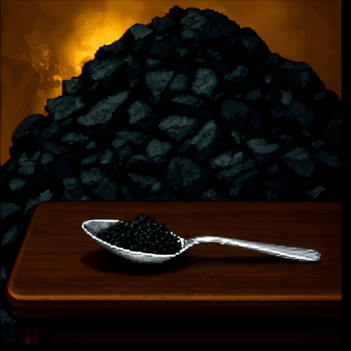
Christmas Present: One Riddle, One Spoonful
Christmas Present: one riddle, one spoonful.
- The Spirit of Christmas Present shows you a customer buying the answer to a riddle. The engine burns one spoonful of coal for it.
- Nobody could measure what that spoonful adds to the smoke over London. Yet the smoke is made of nothing but spoonfuls.
- So is that one purchase anybody's fault? Two philosophers answer very differently.
- One wrote about driving, and the other about harms built up from many tiny acts. Applying their arguments to an AI prompt is our step, not theirs.
No clear principle makes one joyride wrong. The duty is to change the law.
“It's Not My Fault”
The first answer is Walter Sinnott-Armstrong's: it's not my fault.
- The philosopher Walter Sinnott-Armstrong imagines a Sunday drive in a gas-guzzler, taken just for fun.
- His reasoning: warming would happen without that one drive, and the drive could not cause it alone. So no harm can be traced to it.
- He tests one moral principle after another and finds none that clearly makes the drive wrong. He reports a failed search, not a proof that the drive is fine.
- He does not conclude that nobody need act. Our real obligation, he says, is to get governments to do their job.
An act can be wrong because it is one of a set of acts that together do harm.
The Harmless Torturers
The second answer is Derek Parfit's: the harmless torturers.
- The philosopher Derek Parfit imagines a thousand torturers and a thousand victims. Each torturer presses one button.
- Each press adds a tiny amount to every victim's pain. No victim can feel the difference one press makes. Together, the presses leave every victim in agony.
- Parfit holds that each torturer acts wrongly. An act can be wrong because it is one of a set of acts that together harm people.
- Shelly Kagan and John Broome reach similar answers. Kagan argues that each act has a small chance of triggering a large harm. Broome argues that emitting harms others.
Whose Reasoning?
Sinnott-Armstrong's reasoning
Parfit's reasoning
Neither
“The warming would come without this one prompt, and this one prompt could not bring it on alone. So no harm can be traced to it.”
“I can't find a principle that makes this one prompt wrong. What a person should do is work for a law that limits everyone's coal.”
“This prompt may harm no one by itself. It can still be wrong, because it is one of a set of acts that together do harm.”
“Nobody can feel what one more spoonful adds. That does not clear the person who adds it, any more than it clears each of a thousand torturers.”
“Climate change is a matter for governments only. An ordinary person has no duty of any kind about it.”
“One prompt does serious damage to the climate all by itself, whatever anyone else does.”
Whose reasoning? Each line is about one prompt and its spoonful of coal. Sort each one under Sinnott-Armstrong, Parfit, or Neither. When every line is placed, press Check answers.
Right. Sinnott-Armstrong puts the duty on changing the law, and Parfit holds that an act can be wrong as one of a set of acts that together do harm. Neither says that individuals have nothing to do with climate change.
Decision Point: One Link
No. One link changes nothing. The duty is to change the rules.
Yes. It is one of a set of acts that together do harm.
Yes, a little. It carries a small chance of real harm.
It depends on what the prompt is for.
Another decision point. Is one prompt, with its spoonful of coal, a link in the chain that you answer for? This one isn't graded. Pick the answer closest to your view, and read its note.
Philosophers still disagree about this. Notice that the answers can be combined: a person can hold that the single act counts and also work to change the rules.
Nobody should have to give up necessities so that others can keep luxuries.
One Coal and a Fire
Now Henry Shue, with one coal and a fire.
- Dickens writes that Scrooge “had a very small fire, but the clerk's fire was so very much smaller that it looked like one coal.”
- The philosopher Henry Shue separates subsistence emissions, needed for a decent basic life, from luxury emissions, which go beyond that.
- Shue wrote about rich and poor nations. Applying his line to uses of AI is our step: a flood warning sits near one end, and a novelty video near the other.
- Most uses fall in between, such as homework help, translation, or drafting a letter. Shue's distinction does not sort those for you.
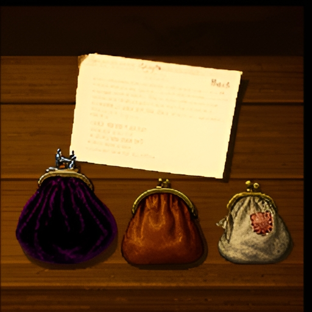
Who Pays for the Coal?
Cleaning up the smoke will cost money. Writers on climate justice, among them Henry Shue, Edward Page, and Simon Caney, debate three principles.
Cleaning up the smoke will cost money. Writers on climate justice, among them Henry Shue, Edward Page, and Simon Caney, debate three principles.
- Polluter pays: those who caused the emissions pay, in proportion to how much they caused. The problem: is the polluter the firm, or the customer who ordered the answer?
- Beneficiary pays: those who gained from the emissions pay, even if they caused none. The problem: gains spread widely and are hard to trace.
- Ability to pay: those who can best afford it pay the most, whatever their part. The problem: it ignores who caused the smoke and who gained.
Which Principle?
Polluter pays
Beneficiary pays
Ability to pay
“Measure the smoke from every chimney in town, and bill each owner for the share that came from theirs.”
“Whoever caused coal to be burned should pay for that coal's smoke, rich or poor, and whether or not it did them any good.”
“The mills never bought an answer or lit a fire, but the trade that the engine's forecasts brought to town made them money. They gained from the burning, so they should cover the cost.”
“Work out how much better off the smoke-making has left each household, and charge each one in proportion to that gain.”
“The wealthiest households should pay the most, including those that never bought an answer or burned a coal.”
“Don't ask who made the smoke or who profited. Set each household's charge by what it can afford.”
Which principle? Each proposal is made at a town meeting about the cost of cleaning up the smoke. Sort each one under polluter pays, beneficiary pays, or ability to pay. When every line is placed, press Check answers.
Right. Polluter pays charges people by how much of the smoke they caused. Beneficiary pays charges them by what they gained, and ability to pay charges them by what they can afford.
Decision Point: The Bill
Scrooge's firm, which burns the coal.
The customers, who order the answers.
Whoever in town can best afford it.
A mix of all three.
A decision point: the bill. Who should pay most of the cost of the smoke from Scrooge's engine? This one isn't graded. Pick the answer closest to your view, and read its note.
Each principle picks out a different payer, and each has a problem you saw. Many writers on climate justice end up combining them.
Machine learning can help cut emissions and help people adapt.
Yet to Come: The Promise
Yet to Come begins with the promise.
- The last Spirit says nothing. It points ahead, to the years Tim will live in. Start with the hopeful view.
- The computer scientist David Rolnick and his colleagues list many ways machine learning could help with climate change.
- Among them: forecasting supply and demand on the power grid, speeding the search for better battery materials, and tracking forests by satellite.
- They present it as one tool among many, not as a cure. Freddie hopes the new hall will do this kind of good.
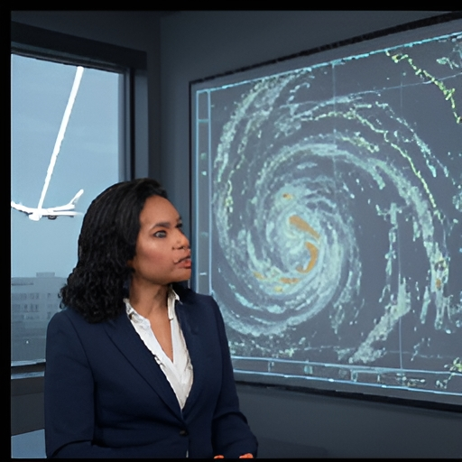
How Much of the Promise Is Real?
How much of the promise is real? These findings are from our world, as of November twenty twenty-six.
Ledger page · Our world, November 2026
- In daily use: in 2025 Europe's weather center, ECMWF, began running an AI forecasting system alongside its traditional one.
- Shown to work, rarely used: the cloud trails behind jets trap heat. In a 2025 trial, flights that followed AI guidance to avoid making them made 62% fewer.
- But fewer than 1 in 10 of the flights offered the guidance flew it as planned. Across all the flights offered it, trails fell by about 12%.
- The International Energy Agency made the same point in 2025: known AI tools could cut emissions, but nothing yet ensures they will be widely used.
Sources: ECMWF (2025), Sankar and colleagues on a Google and American Airlines trial (2026), and the IEA, Energy and AI (2025).
Climate change brings three hard problems together at once.
The Perfect Moral Storm
The philosopher Stephen Gardiner calls climate change a perfect moral storm: three problems that arrive together and make it hard to act well.
The philosopher Stephen Gardiner calls climate change a perfect moral storm: three problems that arrive together and make it hard to act well.
- The global storm: the smoke spreads over the whole world, so no town gains much by cutting alone, and no authority can hold every town to a limit.
- The intergenerational storm: the burning helps people now. Most of the harm falls later, on people like Tim who have no say today.
- The theoretical storm: our theories are not up to the job. They give no agreed way to weigh future people, or to choose when the odds are unknown.
A Convenient Argument
Gardiner also warns about a convenient argument.
- Gardiner warns that the three storms together invite moral corruption: we are drawn to arguments that happen to let us carry on as we are.
- “Burn the coal now, and the engine will fix it later” has that shape. The gain is ours and comes now. The cost is someone else's and comes later.
- That makes the argument suspect. It does not make it false, since a convenient claim can also be true.
- Gardiner wrote about climate policy, not AI. Applying his warning to the engine is our step.
Humanity as a whole must never be the stake in a wager.
Act so that the effects of your action are compatible with the permanence of genuine human life.
The Wager and the Caution
Now, the wager and the caution.
- For the wager: some of the tools are already real, and holding AI back also costs future people the help it might have given.
- For the caution: the philosopher Hans Jonas argues that when a technology can reshape the far future, warnings deserve more weight than promises.
- Jonas allows a person to risk what is their own. He holds that the existence of humanity as a whole must never be made the stake.
- Gardiner, writing about climate engineering, adds that preparing for an emergency differs morally from preparing for one your own failure will bring about.
Jonas wrote about modern technology in general, and Gardiner about climate engineering. Applying either to AI is our step.
Which Storm?
Global
Intergenerational
Theoretical
The engine's smoke spreads over every town alike, so a town that cuts its own coal gains little unless the others cut too.
Each town has its own council, and no council has the power to set a coal limit for all the towns together.
The hall's profits arrive this year. Most of the harm from its smoke arrives decades later.
The people who will live longest with the result are children today, or not yet born, and none of them signs the papers.
Moral philosophers have not agreed on a theory of how much the interests of future people should count.
Even the best current theories of how to choose give no settled guidance when nobody can put odds on the outcomes.
Which storm? Each line is a feature of the decision about the new engine hall. Sort each one under global, intergenerational, or theoretical. When every line is placed, press Check answers.
Right. The global storm is about place, the intergenerational storm is about time, and the theoretical storm is about our tools for thinking.
“Will Be” or “May Be”?
Last, will be, or may be?
- Scrooge asks the last Spirit: “Are these the shadows of the things that Will be, or are they shadows of things that May be, only?”
- A forecast says what will be. A scenario says what may be if we take a certain path. Every long-range number about AI and climate is a scenario.
- A large “if” is where the power comes from. The same engine run on coal or on wind sends up very different amounts of smoke.
- Three questions will outlast this year's numbers. Counted how? Is the clean power new? Who pays if the bet fails?
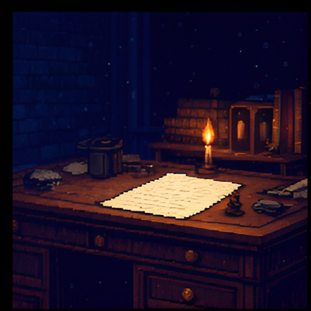
Decision Point: Christmas Morning
Sign. The engine may do more good than its smoke does harm.
Sign, with conditions written into the papers.
Refuse. The smoke is certain and the benefit is a hope.
One last decision point. It is Christmas morning, and the papers for the new engine hall are on the desk. What do you do? This one isn't graded. Pick the answer closest to your view, and read its note.
All three answers can be defended. Whichever you chose, you should now be able to say what you would count, who answers for the smoke and who pays for it, and what you owe the people who come after you.
Where You Stand Now
These are your ratings from the start. Rate each statement again.
These are your ratings from the start. Rate each statement again, then press Submit.
Saved. Now, a quick summary of the lesson.
Summed Up
Here's the lesson, summed up.
- What to count: building and running the engine, what the answers are used for, and how the town changes. Any total depends on how it was counted.
- Efficiency: a thriftier engine can bring a full saving, a rebound, or a backfire. Efficiency alone does not decide which. A cap or a price on the coal is what holds the total down.
- Fault and cost: Sinnott-Armstrong and Parfit disagree about one link. Polluter pays, beneficiary pays, and ability to pay disagree about the bill.
- The future: Gardiner's three storms make “burn now, fix later” a tempting argument. Tempting is not the same as false.
For Further Reading
If you'd like to go further, here are some good places to start, each with a note on why it's worth your time. Thanks for playing.
- Walter Sinnott-Armstrong, “It's Not My Fault: Global Warming and Individual Moral Obligations,” in Perspectives on Climate Change, ed. Sinnott-Armstrong and Howarth (Elsevier, 2005), 285–307. The Sunday drive, and a careful search for a principle that forbids it.
- Henry Shue, “Subsistence Emissions and Luxury Emissions,” Law & Policy 15, no. 1 (1993): 39–60. Why necessities and luxuries should not be counted alike.
- Stephen M. Gardiner, “A Perfect Moral Storm: Climate Change, Intergenerational Ethics and the Problem of Moral Corruption,” Environmental Values 15, no. 3 (2006): 397–413. The three storms, in the author's own words.
- Lynn H. Kaack and colleagues, “Aligning Artificial Intelligence with Climate Change Mitigation,” Nature Climate Change 12 (2022): 518–527. The three kinds of effect, with examples of each.
- Alexandra Sasha Luccioni, Emma Strubell, and Kate Crawford, “From Efficiency Gains to Rebound Effects,” Proceedings of FAccT '25 (2025): 76–88. Jevons's paradox applied to AI. Free online.
About this lesson. Brendan Shea, PhD, wrote this lesson with help from AI tools. Claude (Anthropic) helped draft the text and code and check facts, and the illustrations were made with AI image generators. The narrator's voice is synthetic (Google Gemini text-to-speech). The author reviewed everything and is responsible for any errors.